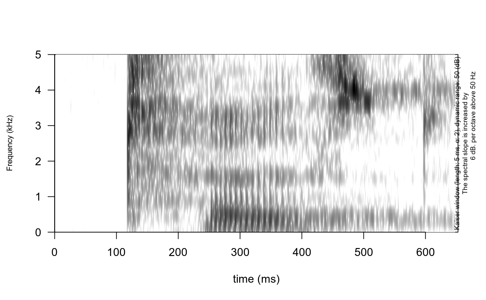

This function was slightly changed from phonTools::spectrogram().
Argument description is copied from phonTools::spectrogram().
draw_spectrogram( sound, fs = 22050, text_size = 1, window_length = 5, dynamic_range = 50, window = "kaiser", windowparameter = -1, freq_scale = "kHz", spectrum_info = TRUE, timestep = -1000, padding = 10, preemphasisf = 50, frequency_range = c(0, 5), nlevels = dynamic_range, x_axis = TRUE, title = NULL, raven_annotation = NULL, formant_df = NULL )
| sound | Either a numeric vector representing a sequence of samples taken from a sound wave or a sound object created with the loadsound() or makesound() functions. |
|---|---|
| fs | The sampling frequency in Hz. If a sound object is passed this does not need to be specified. |
| text_size | numeric, text size (default = 1). |
| window_length | The desired analysis window length in milliseconds. |
| dynamic_range | Values greater than this many dB below the maximum will be displayed in the same color. |
| window | A string indicating the type of window desired. Supported types are: rectangular, hann, hamming, cosine, bartlett, gaussian, and kaiser. |
| windowparameter | The parameter necessary to generate the window, if appropriate. At the moment, the only windows that require parameters are the Kaiser and Gaussian windows. By default, these are set to 2 for kaiser and 0.4 for gaussian windows. |
| freq_scale | a string indicating the type of frequency scale. Supported types are: "Hz" and "kHz". |
| spectrum_info | logical. If |
| timestep | If a negative value is given, -N, then N equally-spaced time steps are calculated. If a positive number is given, this is the spacing between adjacent analyses, in milliseconds. |
| padding | The amount of zero padding for each window, measured in units of window length. For example, if the window is 50 points, and padding = 10, 500 zeros will be appended to each window. |
| preemphasisf | Preemphasis of 6 dB per octave is added to frequencies above the specified frequency. For no preemphasis, set to a frequency higher than the sampling frequency. |
| frequency_range | vector with the range of frequencies to be displayed
for the spectrogram up to a maximum of |
| nlevels | The number of divisions to be used for the z-axis of the spectrogram. By default it is set equal to the dynamic range, meaning that a single color represents 1 dB on the z-axis. |
| x_axis | If |
| title | Character with the title. |
| raven_annotation | Raven (Center for Conservation Bioacoustics) style
annotations (boxes over spectrogram). The dataframe that contains
|
| formant_df | dataframe with formants from |
#> Warning: conversion failure on 'Kaiser window (length: 5 ms, α: 2), dynamic range: 50 (dB)' in 'mbcsToSbcs': dot substituted for <ce>#> Warning: conversion failure on 'Kaiser window (length: 5 ms, α: 2), dynamic range: 50 (dB)' in 'mbcsToSbcs': dot substituted for <b1># }